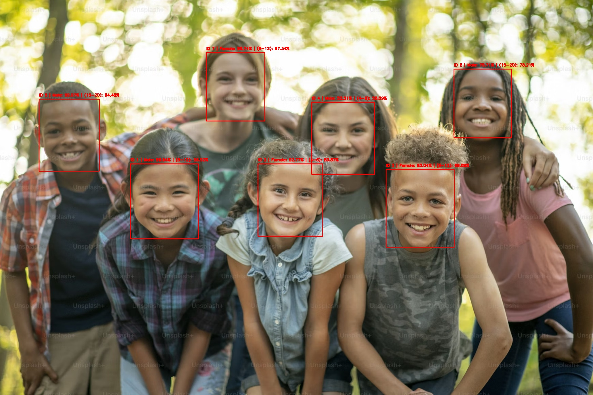
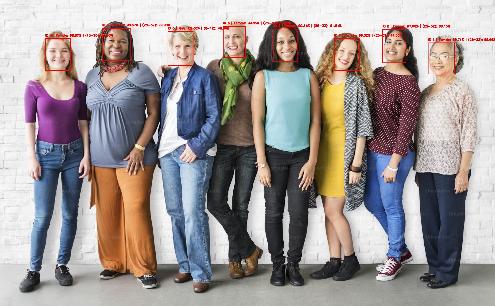

Sprawozdanie z analizy detekcji wieku i płci na obrazach
1 Wstęp
Celem pracy była analiza możliwości automatycznej detekcji twarzy oraz klasyfikacji wieku i płci osób znajdujących się na obrazach cyfrowych. W badaniu wykorzystano modele oparte na bibliotece OpenCV oraz gotowe sieci neuronowe zapisane w formacie Caffe. Analiza została przeprowadzona na zestawie zdjęć zawierających fotografie grupowe.
Celem szczegółowym było:
- wykrycie twarzy na obrazach,
- przypisanie każdej wykrytej twarzy do przedziału wiekowego,
- określenie przewidywanej płci,
- zapisanie wyników do plików .csv,
- wykonanie podsumowania liczby wykrytych osób, średniego oszacowanego wieku oraz dominującej płci.
2 Założenia i metodyka
W analizie zastosowano trzy modele:
- model detekcji twarzy,
- model klasyfikacji wieku,
- model klasyfikacji płci.
Detekcja wieku nie była realizowana jako przewidywanie dokładnej liczby lat, lecz jako klasyfikacja do przedziałów wiekowych:
0–2 lata
4–6 lat
8–12 lat
15–20 lat
25–32 lata
38–43 lata
48–53 lata
60–100 lat
Średni wiek wyznaczono na podstawie wartości środkowych przedziałów, dlatego ma on charakter przybliżony, a nie rzeczywisty.
3 Narzędzia i środowisko
Analizę wykonano w języku Python z wykorzystaniem następujących bibliotek:
OpenCVNumPyoscsv
Wyniki zapisano do:- obrazów wynikowych z naniesionymi etykietami,
- pliku
wyniki_osoby.csv, - pliku
podsumowanie.csv.
4 Opis działania programu
Dla każdego obrazu wykonywano:
1. Wczytanie obrazu.
2. Przeskalowanie obrazu.
3. Wykrycie twarzy z użyciem modelu detekcji twarzy.
4. Wycięcie fragmentu obrazu odpowiadającego twarzy.
5. Klasyfikacja wieku na podstawie wyciętej twarzy.
6. Klasyfikacja płci na podstawie wyciętej twarzy.
7. Zapis wyników do pliku .csv.
8. Naniesienie etykiet na obraz i zapis obrazu wynikowego.
5 Prezentacja przypadków
5.1 Przykład I

Na przedstawionym przykładzie analizie poddano zdjęcie grupowe przedstawiające siedem osób (dzieci) znajdujących się w podobnej odległości od kamery, w dobrych warunkach oświetleniowych.
Model poprawnie wykrył wszystkie twarze obecne na obrazie oraz przypisał im identyfikatory (ID). Detekcja twarzy była skuteczna – dla każdej osoby wyznaczono obszar twarzy, co świadczy o dobrej jakości działania modelu detekcji.
W przypadku klasyfikacji wieku większość osób została przypisana do przedziałów odpowiadających dzieciom, głównie: 8–12 lat, 15–20 lat, sporadycznie 4–6 lat.
Można zauważyć, że wyniki są częściowo zgodne z rzeczywistością (dzieci zostały rozpoznane jako osoby młode), jednak występują pewne błędy – niektóre osoby zostały przypisane do starszych przedziałów wiekowych (np. 15–20 lat), mimo że wizualnie należą do młodszej grupy.
W zakresie klasyfikacji płci model również wykazuje niepełną dokładność. Dla części osób przypisanie płci wydaje się poprawne, jednak w niektórych przypadkach może być niepewne lub błędne, co wynika z ograniczeń modelu oraz podobieństwa cech wizualnych u dzieci.
5.2 Przykład II

Na analizowanym obrazie przedstawiono grupę ośmiu osób, obejmującą szeroki zakres wiekowy – od osób młodych po osoby starsze. Zdjęcie wykonano w dobrych warunkach oświetleniowych, a twarze są wyraźne i ustawione frontalnie, co sprzyja poprawnej detekcji.
Model poprawnie wykrył wszystkie twarze na obrazie i przypisał im identyfikatory. Detekcja twarzy w tym przypadku była bardzo skuteczna – nie zaobserwowano pominiętych osób.
W zakresie klasyfikacji płci model osiągnął wysoką skuteczność – wszystkie osoby zostały sklasyfikowane jako kobiety, co odpowiada rzeczywistości przedstawionej na obrazie.
Natomiast w klasyfikacji wieku pojawiają się wyraźne błędy. Większość osób została przypisana do przedziału 25–32 lata, niezależnie od rzeczywistego wieku. Dotyczy to zarówno osób młodszych, jak i wyraźnie starszych (np. osoby po prawej stronie zdjęcia).
Oznacza to, że model ma tendencję do „uśredniania” wieku i przypisywania go do najczęściej występującego przedziału. Szczególnie widoczne są błędy dla osób starszych, które zostały sklasyfikowane jako znacznie młodsze.
5.3 Zestawienie wyników liczbowych
Wyniki szczegółowe dla każdej wykrytej osoby zapisano w pliku wyniki_osoby.csv, natomiast podsumowanie globalne w pliku podsumowanie.csv
W szczególności zapisano:
- nazwę obrazu,
- identyfikator osoby na obrazie,
- przewidywany przedział wieku,
- prawdopodobieństwo klasyfikacji wieku,
- oszacowany wiek środkowy,
- przewidywaną płeć,
- prawdopodobieństwo klasyfikacji płci.
6 Interpretacja wyników
Model najlepiej radzi sobie z:
twarzami frontalnymi,
dobrym oświetleniem,
niewielką liczbą osób na zdjęciu.
Największe błędy występują w klasyfikacji wieku, szczególnie dla dzieci i osób starszych.
7 Co model wykrywa lepiej, a co gorzej
7.1 Elementy wykrywane lepiej
Model lepiej radzi sobie w następujących przypadkach:
- twarze dobrze widoczne i ustawione przodem,
- obrazy o dobrej jakości,
- umiarkowana liczba osób na zdjęciu,
- brak silnych zasłonięć twarzy.
7.2 Elementy wykrywane gorzej
Model gorzej radzi sobie w następujących przypadkach:
- małe twarze w tle,
- twarze pod dużym kątem,
- osoby częściowo zasłonięte,
- osoby starsze i dzieci, dla których klasyfikacja wieku bywa mniej trafna,
- trudne warunki oświetleniowe.
8 Ograniczenia zastosowanego rozwiązania
Do najważniejszych ograniczeń należą:
brak dokładnego wieku (tylko przedziały)
błędy dla skrajnych grup wiekowych
zależność od jakości zdjęcia
9 Wnioski
Na podstawie przeprowadzonej analizy można stwierdzić, że zastosowane modele umożliwiają automatyczne wykrywanie twarzy oraz orientacyjną ocenę wieku i płci osób na obrazach. Rozwiązanie działa poprawnie dla prostszych przypadków, zwłaszcza gdy twarze są dobrze widoczne, natomiast jego skuteczność spada w przypadku trudniejszych warunków.
Najbardziej użyteczne rezultaty uzyskano w zakresie ogólnej oceny struktury wieku i płci w analizowanym zbiorze. Wyniki te należy jednak traktować ostrożnie, ponieważ przewidywany wiek ma charakter przedziałowy i przybliżony. Ostatecznie można uznać, że zastosowane podejście sprawdza się jako demonstracja działania modeli widzenia komputerowego.
10 Załączniki
10.1 Pliki wynikowe
- wyniki_osoby.csv
- podsumowanie.csv
10.2 Przykładowe grafiki do dodania
- obrazy wejściowe (przed analizą),
- obrazy wynikowe (po analizie),
- ewentualnie zrzut fragmentu tabeli .csv.
11 Informacje końcowe
Strona została wygenerowana z pliku Quarto .qmd do formatu HTML.
11.1 Repozytorium projektu
Kod źródłowy oraz dane wykorzystane w niniejszej pracy zostały udostępnione publicznie w repozytorium GitHub:
https://github.com/twoj-login/twoj-repohttps://github.com/alittleprogramer